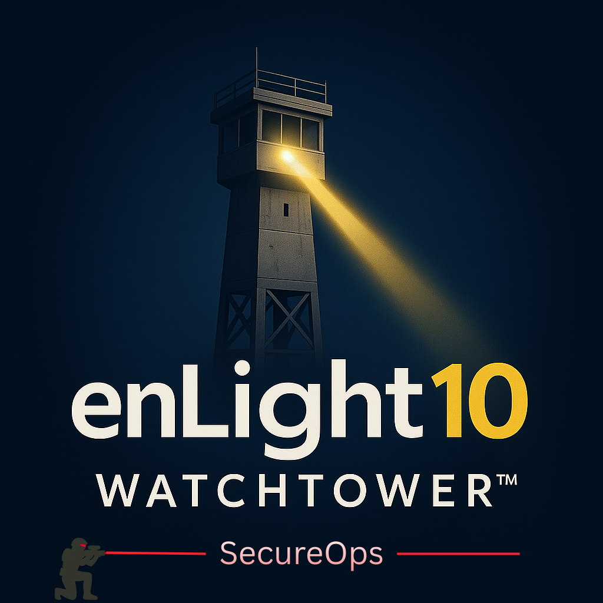

Monitoring strategy
Define practical coverage models, escalation paths, telemetry priorities, and reporting cadence.
SecureOps
Watchtower SecureOps helps teams improve security operations with monitoring strategy, evidence-ready reporting, workflow discipline, and scoped operational support.
SecureOps is not positioned as the default entry point. Most customers should start with an assessment, remediation roadmap, or readiness review, then add operational enablement where it makes sense.

Define practical coverage models, escalation paths, telemetry priorities, and reporting cadence.
Improve handoffs, playbooks, ticketing, remediation tracking, and decision documentation.
Create recurring summaries that show risks, actions, exceptions, and progress.
Align SIEM, EDR, identity, vulnerability, and ticketing data to the work that needs action.
Provide focused triage, investigation, and after-action support when scoped by engagement.
When broader coverage is needed, enLight10 can coordinate scoped or partner-supported options.
SecureOps works best when it follows a clear assessment, roadmap, and remediation workflow.